1. Introduction
1.1 Purpose
“Find a store” system is a platform between small local businesses and at home customers to connect and interact with each other. In a way the system is an attempt to virtualize the typical interactions between the two party. The inspiration for this project is to reduce the necessity of going outside for day-to-day household products during the pandemic.
1.2 Document Convention
The document is written following the IEEE template for SRS (Software
Requirement Specification). The headers, sub-headers, paragraphs are written as follows:
i. Headers: Calibri Head, font size-16, Bold
ii. Sub-headers: Calibri Head, font size-14
iii. Paragraphs: Calibri Body, font size-12
Bold text is used to put emphasis, phrases/words that are defined in the glossary are given in italic with their serial numbers as superscript and a table is used in Section-4 to list the actions and system responses and on Section 2.3 to show user classes and their pertinent characteristics.
1.3 Intended Audience and Reading Suggestions
The primary intended audience of this SRS document are the project team members and our course instructor. It should also be understandable to knowledgable technical person such as software developers and software industry business specialists.
1.4 Product Scope
The main product of our system are the two separate Android app for customers 2 & shop-owners 3 . Interaction between the two parties will be done using the two apps. The system also consists of a website that enables customers 2 to view and post reviews and shop-owners 3 to view their transactions analytics. The goals and objectives of the system are stated below,
Goals (what we hope to achieve):
- Substitute/reduce the need for going outside to get day-to-day household items from local stores; particularly- stationary stores, bakeries, convenience stores.
- Virtualize the existing interaction between the two party.
- Ensure desirable user experience and user expected reliability.
Objectives (how we hope to achieve the goals):
- Mimic the well-known traditional behaviors between customers 2 and shop-owners 3 through the android app and website wherever possible.
- Include features that are easy to use and understand such as- connect customers & shop-owners through voice call, form a queue when multiple customers at a shop, take available items input by scanning barcodes etc. (Broadly discussed in section-4)
- Design UI components following the designs of existing popular app and websites.
1.5 References
Google.com2. Overall Description
2.1 Product Perspective
The idea of this system is inspired from the current area-wise lockdown enforced all over Bangladesh as a counter measure to the pandemic. By using our android app customers from home can connect with local shops to get day-to-day necessary items, while small businesses struggling dearly due to lock-down can continue business. A simple diagram of the overview of the whole system is given below,
2.2 Product Functions
The major features of the system are as follows,
- Register shop-owner accounts & customer accounts.
- Customers can find shops nearby from map or search for shops by items.
- Shop-owners entry items by scanning product barcode or image to text conversion from product sticker.
- Customers enter shops wait in queue(if any), browse items & chat with other customers while waiting.
- Orders are placed and finalized over voice call (app-to-app) between customers & shop-owners.
- System suggestion of efficient delivery sequence.
- Shop-owners and customers view reviews given by customers.
2.3 User Classes and Characteristics
Two type of users will interact with our system’s app and website- customer, shop-owner. On the basis of their characteristics further divisions can be made,
Based on technical expertise:
| User class | Characteristic | Example |
|---|---|---|
| Technophobes (majority) | Unwilling to use technology such as mobile phones, computers. | Housewife (customer), domestic workers (customer), old person etc. |
| Technology Shy | Moderate technical expertise. Responsive to clear-cut, visible benefits. | People who use phones and computers where absolutely necessary. |
| Tech-savvy | Comfortable with latest technologies. Well-aware of new trends. | Mostly young generation of people. |
Based on Shop type:
Initially app consists of three shop types- convenience stores, stationary stores and bakeries. Accordingly the shop-owner account types can be though of these three types as well.
2.4 Operating Environments
Android App:
- Device Hardware –
- “Android compatible” device.[1] ref: https://developer.android.com/guide/practices/compatibility#defined
- Screen width 4’’ – 6’’, typical phone screen.
- Operating System – Android 5.1 (Lolipop) or above.
- Software Component – Google Play Services, Sinch Android SDK.
Website: Any browser that runs html, css and javascript.
2.5 Design and Implementation Constraints
- Shop-owner account’s legitimacy is a concern, since anyone can register. Although we have phone number verification at sign-up implemented.
- Reliability of delivery and receiving is completely up to the users. The app is merely a medium for confirmation.
- The basic (free) version API/SDKs, database, hosting service that are used allow a threshold amount of usage. It is important to note that their functionalities are essential for the system.
- Since the Android OS is open-source, it’s implementation differs from manufacturer to manufacturer. Certain features of our app may not function smoothly due to restrictions put in the OS implementation.
- The App requires user permission for working with components like- fetching location, microphone-speaker access, camera access etc.
- The core features require continuous active internet connection.
- Majority of the target users for the system are technophobe, technology-shy people. Acceptability of the designed UI/UX is uncertain.
2.6 User Documentation
A demo video of the app and website usage will be available to the users. No documented manual is to be provided.
2.7 Assumptions and Dependencies
Assumptions:
- Users will adhere to their consents made using the app. Such as- shop- owners will deliver and customers will pay on delivery according to their mutual consent, customers and shop-owner provide their actual home/store address etc.
- Customers & shop-owners phones have working microphone, speaker and/or headphone/earphone connectibility.
- Shop-owners and staff account (if allowed) holders to have a working camera on phone that is compatible for working with scanning and text detection tools used.
Dependencies:
- Users need to have google play services installed on their android phones (which is pretty common). Particularly- Barcode Scanning & TextRecognition from ML kit, Maps SDK, Fused Location API.
3. External Interface
3.1 User Interfaces
The UI of the app is designed in such a way that any user can interact with the application comfortably. When the user launches the app for the first time, the landing page welcomes the user with "Sign Up (Get Started)" or "Sign In" option.
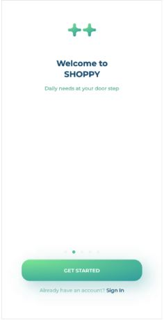
The "Sign In" option will land the user to the "Login" page where existing users can use their credentials (e.g., email and password) to log in
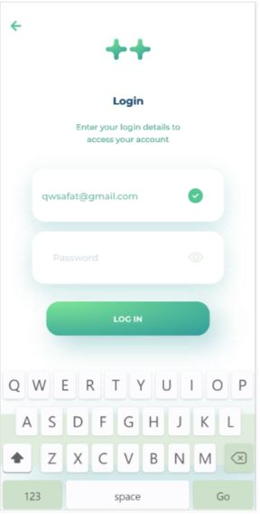For the new user, the "Sign Up" option will take them to a page where they have to enter their phone number for verification. The OTP code will be needed to insert on the next page to continue the verification process
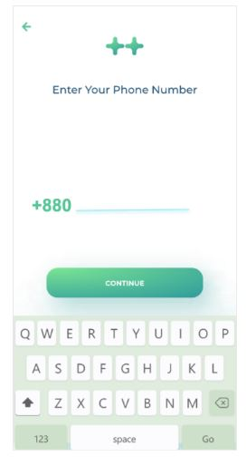After the successful mobile number verification, the user must have to set their profile by providing necessary information in the "Setup Profile" page.
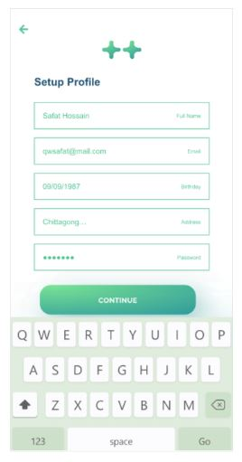After completing the authentication process, the user will land on the map-view page locating all the nearby stores, which is also considered as the homepage of the application. Every store on the map has a status indicator (dot) where red, yellow, and green represent not available, busy, and available status.
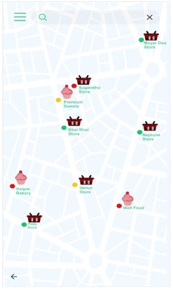To access a store, the user has to tap on the store icon or the name. This will take the user to the specific store page where the user can see the existing queue and a button/option to enter the shop.
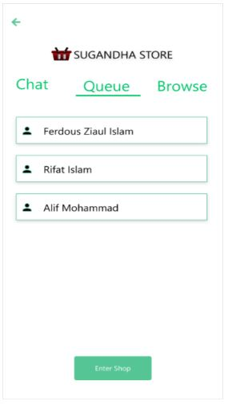After entering the shop, the user can see his/her name on the queue and access the "Chat" window from the tab above the page. In the chat window, the user can chat with the existing customers in the queue
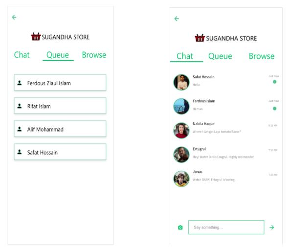On the browse tab, the user can see the existing products and their prices that are available in the store.
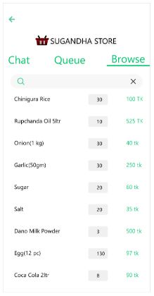There is an option besides the search box on the navigation bar in the map-view page which allows users to access the menu. The “Menu” page contains several functionality which enables the user to edit profile, view pending orders, check order history and change application settings.
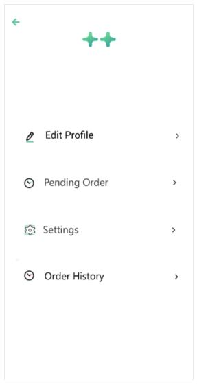On the shop-owner version, the user(owner) will be landed on their shop's specific customer queue page after the authentication process. In the queue tab, the user can see the list of all the customers waiting for the service
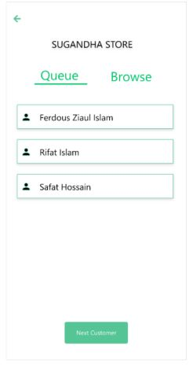The "Next Customer" option at the bottom of the homepage takes the user (owner) to the "Purchase List" page. On that page, the user can add the items that the client agrees to buy. There are options for confirming the current order and controlling the ongoing phone call in the bottom section.
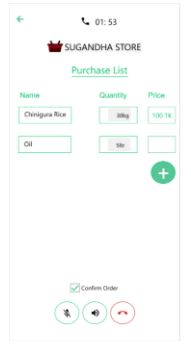On the browse tab (from homepage), there is a list of items that are currently available at the store.The shop-owner can add new items, modify the prices, and remove out of stock items from the list.
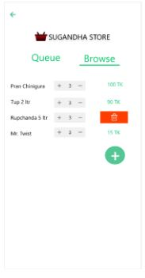3.2 Hardware Interfaces
The device that will run the application, requires WIFI and GPS for using the map and detecting the accurate user location. The device also needs the camera for barcode and product scanning and speaker and microphone for voice call.
3.3 Software Interfaces
The minimum android operating system version required to run the application is "Lolipop5.1 (API level 22)". The application will work properly on any device with the latest (from android 5.1 to 10) android operating system.
Communications Interfaces
Real-time voice protocol (RTP) is used in this application for VoIP service, which allows the users to make calls using internet connections. For chatting or messaging, Firebase Cloud Message (FCM) is used, which ensures data protection (GDPR) and encryption.
4. System Features
This section includes the requirements that describe all the essential functions of the system.
The naming convention will follow the following conventions
PFRx � Primary functional requirement
SFRx � Secondary functional requirement
4.1 Functional Requirement 1
4.1.1 Functional requirement 1.1
ID: PFR1
TITLE: User Registration
Auth: User
PURPOSE: Register the user information
OVERVIEW: Given that a user has downloaded the mobile application, or accessed the website then the user should be able to register into the system. The user must provide Name, Password, Address, Phone Number, address and user type. User type consist of 'Admin','Tenant'and 'Landlord'.
TYPE: Primary function
PRIORITY: High
DEP: none
COURSE OF EVENTS:
I) Open the application or website
II) Enter all the information
III) Click on register
ALTERNATIVE COURSE OF EVENTS:
I) Email not match with regex, show error: �Please provide a valid email�
II) Password is less than 6 digits, show error: �Password must include at least 6 digits�
III) Any field left blank, show error: �All the fields must be filled up�
IV) User type not selected, default type will be buyer.
4.1.2 Functional requirement 1.2
ID: PFR2
TITLE: User Login
ACTOR: User
PURPOSE: Login the user
OVERVIEW: Given that the user is already registered, the user will be able to login by providing the email and password.
TYPE: Primary function
PRIORITY: High
DEP: PFR1
COURSE OF EVENTS:
I) Select �Already Registered� button from the registration page.
II) Enter email and password
III) Click on login
ALTERNATIVE COURSE OF EVENTS:
I) Email not exist, show error: �This email is not registered yet. Please Register first.�
II) Password does not match: �Password or email is not correct. Please retry!�
III) Any field left blank, show error: �All the fields must be filled up�
4.1.3 Functional requirement 1.3
ID: PFR3
TITLE: Search
Auth: User - Tenant
PURPOSE: Search for house to get
OVERVIEW: From the home page the tenant type user must be able to search for their preferred product. The search will find the match the title of the product. The user will also be able to add tags to shorten their search range.
TYPE: Primary function
PRIORITY: Medium
DEP: PFR2
COURSE OF EVENTS:
I) Type the search keywords
II) Provide Tags (Optional)
III) Click on search
ALTERNATIVE COURSE OF EVENTS:
I) Search keywords are empty, show error: �Please enter a keyword�
4.1.4 Functional requirement 1.4
ID: PFR4
TITLE: Order Product
Auth: User - tenant
PURPOSE: Order the house rent
OVERVIEW: From the product page a user will be able to click on place order. The order will be placed assuming that the payment type will be pay on delivery and address will be the address of the user.
TYPE: Primary function
PRIORITY: High
DEP: PFR2
COURSE OF EVENTS:
I) Click on Order house
ALTERNATIVE COURSE OF EVENTS:
I) Address must be valid, Admins will check for the validity of the address and manually send SMS to the user regarding the issue.
4.1.5 Functional requirement 1.5
ID: PFR5
TITLE: Rate Product
Auth: User - tenant
PURPOSE: Rate and Review previously bought products
OVERVIEW: From the Product page the user can click on �Review product� button. This will pop up a window with 5 empty stars and a comment box. The user will have to click on any star which will signify the rating based on one�s index of the star. Th user can additionally add a review comment into the box and submit the rating.
TYPE: Primary function
PRIORITY: Low
DEP: PFR2
COURSE OF EVENTS:
I) Select a star
II) Optionally type a comment
III) Click on submit
ALTERNATIVE COURSE OF EVENTS:
I) No stars selected, show error: �You must rate the product from 1-5�
4.1.6 Functional requirement 1.6
ID: PFR6
TITLE: See AR of the product � Mobile Application only
Auth: User - Tenant
PURPOSE: See the product in real time with the camera of the mobile app
OVERVIEW: From the product page the tenant can select the view in AR button. This bring to Product AR page. User will be able to move or rotate the product. The product will stay still in perspective of the surface.
PRIORITY: High
DEP: PFR8
COURSE OF EVENTS:
I) Select a product from home page
II) Click on view product in AR
III) Exit from the view
ALTERNATIVE COURSE OF EVENTS:
I) Not enough light, show error: �The environment doesn�t have enough light to find a surface�
--Wait till environment changes, before showing the product
4.1.7 Functional requirement 1.7
ID: PFR7
TITLE: Profile Page
Auth: User
PURPOSE: View the profile page
OVERVIEW: Show the user information to the user. This information will include, name, email, phone number, address and user type. User will be able to modify any of this information except for the mail.
TYPE: Primary function
PRIORITY: Low
DEP: PFR2
COURSE OF EVENTS:
I) Select Profile button from home
II) Select any field
III) Modify the selected field
IV) Click on update information
ALTERNATIVE COURSE OF EVENTS:
I) Data not downloaded properly, show error: �Couldn�t connect to server, please check your internet connection and try again later!�
-Wait till environment changes, before showing the product
4.1.8 Functional requirement 1.8
ID: PFR8
TITLE: Product Page
ACTOR: User
PURPOSE: View the Product page
OVERVIEW: Product page can be accessed from various other views. It is assumed that this page is accessed by clicking on a product. The information regarding that product will then be shown here. User can view the details of a product from this view.
TYPE: Primary function
PRIORITY: High
DEP: none
COURSE OF EVENTS:
I) Select a product
II) Select any functionality provided by the product page
ALTERNATIVE COURSE OF EVENTS:
I) Product details not downloaded in time limit of 30 seconds, show error: �Couldn�t connect to server, please check your internet connection and try again later!�
-Appear retry button
4.1.9 Functional requirement 1.9
ID: PFR9
TITLE: Administrator Login
ACTOR: Admin
PURPOSE: Login the admin
OVERVIEW: Given that the admin is already registered the admin will be able to login in trough a web portal.
TYPE: Primary function
PRIORITY: High
DEP: none
COURSE OF EVENTS:
II) Enter email/username and password
III) Click on login
ALTERNATIVE COURSE OF EVENTS:
I) Email not exist, show error: �This email/user is not registered yet. Please Register first.�
II) Password does not match: �Password or email is not correct. Please retry!�
III) Any field left blank, show error: �All the fields must be filled up�
4.1.10 Functional requirement 1.10
ID: PFR10
TITLE: Admin Dashboard
ACTOR: Admin
PURPOSE: View the admin dashboard
OVERVIEW: The admin dashboard will show sales overview and analytics, recent activity and latest orders.
TYPE: Primary function
PRIORITY: High
DEP: PFR9
COURSE OF EVENTS:
I) Change order status
II) View order details
ALTERNATIVE COURSE OF EVENTS:
I) No order to view
4.1.11 Functional requirement 1.11
ID: PFR11
TITLE: Category Menu
ACTOR: Admin
PURPOSE: Add new, remove or edit existing categories
OVERVIEW: The admin will be able to create a new category. S/He will also be able to remove or edit existing categories.
TYPE: Primary function
PRIORITY: High
DEP: PFR9, PFR10
COURSE OF EVENTS:
I) Create a new category
II) Edit existing category
III)Remove existing category
ALTERNATIVE COURSE OF EVENTS:
I) No category to edit/delete
II) Category Limit reached, no more category can be added.
4.1.12 Functional requirement 1.12
ID: PFR12
TITLE: Product Menu
ACTOR: Admin
PURPOSE: Add new, remove or edit existing products
OVERVIEW: The admin will be able to create a new product. S/He will also be able to remove or edit existing products. Product�s 3D model file can be uploaded as well as 2D images of the product through this menu.
TYPE: Primary function
PRIORITY: High
DEP: PFR9, PFR10, PFR11
COURSE OF EVENTS:
I) Create a new Product
II) Edit existing Product
III)Remove existing Product
III) Add product description
IV) Add 2D images of the product
ALTERNATIVE COURSE OF EVENTS:
I) No product to edit/delete
II) Product capacity reached: �no more products can be added!�.
III) Invalid file uploaded for 2D image: �Please upload a valid file!�
IV) File size too big: �File is too large to upload�
4.2 Functional Requirement 2
4.2.1 Functional requirement 2.1
ID: SFR1
TITLE: Download mobile application
ACTOR: User
OVERVIEW: A user should be able to download the mobile application through either an application store or similar service on the mobile phone. The application should be free to download.
PURPOSE: In order for a user to download the mobile application.
TYPE: Secondary function
Priority: High
DEP: None
COURSE OF EVENTS:
I) Downloads the app from google play store
4.2.2 Functional requirement 2.2
ID: SFR2
TITLE: Check Password
ACTOR: System
RAT: Match the password
DESC: Match password entered by the user during login. The inserted password will be matched against the one stored in the database.
TYPE: Secondary function
PRIORITY: High
DEP: PFR2
COURSE OF EVENTS:
I) Get password from user
II) Get password from databases
III) Match if both the passwords are the same.
ALTERNATIVE COURSE OF EVENTS:
I) The errors will be handled by the view using this function
4.2.3 Functional requirement 2.3
ID: SFR3
TITLE: Get 3D/2D model
ACTOR: System
PURPOSE: Get the 3d model of a specified product from the database
OVERVIEW: Search for the product id and find the 3D model from the database
TYPE: Secondary function
PRIORITY: High
DEP: none
COURSE OF EVENTS:
I) Get product ID
II) Search the product by its id in the database
III) Download the 3D/2D model
ALTERNATIVE COURSE OF EVENTS:
I) Internet Connection Problem, show error �Couldn�t download the 3D model, please try again later�
-Appear retry button
4.2.4 Functional requirement 2.4
ID: SFR4
TITLE: Check if User is logged in
ACTOR: System
PURPOSE: Check if user is already logged in
OVERVIEW: The system may need to check if the user is properly logged in in different scenarios. The login state may be cached in the running device.
TYPE: Secondary function
PRIORITY: High
DEP: PFR2
COURSE OF EVENTS:
I) Get user login status from device
ALTERNATIVE COURSE OF EVENTS:
I) Couldn�t access device storage, show error �Couldn�t access device memory. Check the permissions for this app�
4.3 Use Case Diagram

4.4 UML expended use case
4.4.1: UML Expand Use Case for Login:
- 1. Use Case Name: Login.
- 2. Type: Primary, Secondary.
- 3. Actor(s): Admin, Landlord, Tenant.
- 4. Brief Overview: When a user login, he come to his dashboard and if he is a new user then the system pushes his to register dashboard and after the register, he can login.
-
5. Typical Course of Events:
- -
- -
4.4.2: UML Expand Use Case for Registration:
-
- 6. Use Case Name: Registration.
- 7. Type: Primary.
- 8. Actor(s): Admin, Landlord, Tenant.
- 9. Brief Overview: Every user must register to use this system. He has to first register as Landlord or Tenant. The registration page is different for tenant and landlord.
-
10. Typical Course of Events:
- -
 -
- - -
4.4.3: UML Expand Use Case for Search Apartment:
-
- 11. Use Case Name: Apartment.
- 12. Type: Primary.
- 13. Actor(s): Tenant.
- 14. Brief Overview: When a user search for a apartment the system ask his to fill up his requirements like rent amount, number of rooms, number of washrooms, place and after that the system show suitable apartments.
-
15. Typical Course of Events:
- -
- - -
4.4.4: UML Expand Use Case for Select Apartment:
-
- 16. Use Case Name: Select Apartment.
- 17. Type: Primary.
- 18. Actor(s): Tenant.
- 19. Brief Overview: When a tenant selects an apartment he likes, he shows all the information of the apartment like rent, rooms pictures, etc. If he chooses the apartment then he can confirm his reservation though reservation button.
-
20. Typical Course of Events:
- -
- - -
4.4.5: UML Expand Use Case for Reservation Apartment:
-
- 21. Use Case Name: Reservation Apartment.
- 22. Type: Primary.
- 23. Actor(s): Tenant.
- 24. Brief Overview: When a tenant wants to reserve an apartment, he first has to fill up all his information with NID number and after fill up the information he has to press confirm button, then a message go to landlord and he contact with the tenant.
-
25. Typical Course of Events:
- -
- - -
4.4.6: UML Expand Use Case for Report to Landlord:
-
- 26. Use Case Name: Report to Landlord.
- 27. Type: Primary.
- 28. Actor(s): Tenant.
- 29. Brief Overview: Tenant can complain about anything of the apartment through report option.
-
30. Typical Course of Events:
-
 -
- 4.4.7: UML Expand Use Case for Apartment Advertise:
1. Use Case Name: Apartment Advertise.
2. Type: Primary.
3. Actor(s): Landlord.
4. Brief Overview: Only landlord can upload or edit apartment advertise using this option.
5. Typical Course of Events:

4.4.8: UML Expand Use Case for Remove Advertise:
6. Use Case Name: Remove Advertise.
7. Type: Primary.
8. Actor(s): Admin, Landlord.
9. Brief Overview: Landlord and Admin can remove an advertise from this option.
10. Typical Course of Events:

4.4.9: UML Expand Use Case for View Report from Tenant:
11. Use Case Name: View report from tenant.
12. Type: Primary.
13. Actor(s): Landlord.
14. Brief Overview: If tenant can any report to landlord then landlord can solve this.
15. Typical Course of Events:

4.4.10: UML Expand Use Case for Maintaining Apartment Info:
16. Use Case Name: Maintaining apartment information.
17. Type: Primary.
18. Actor(s): Admin.
19. Brief Overview: Only admin can maintain this. If admin upload any wrong info, then admin can change it easily.
20. Typical Course of Events:

4.4.11: UML Expand Use Case for View Monthly Bill Report:
21. Use Case Name: View monthly bill report.
22. Type: Primary.
23. Actor(s): Admin, Tenant, Landlord.
24. Brief Overview: Landlord can show all the payment. After see that landlord can contact to tenant.
25. Typical Course of Events:

5. Other Nonfunctional Requirements
5.1 Performance Requirements
There are no specific performance requirements for this application. But, the real-time systems for messaging, VoIP service, and client-shop owner cart systems should be designed in such a way that there is no significant time delay in the application. The responsive UI has to perform precisely to ensure a smooth user experience.
5.2Safety Requirements
There are no specific performance requirements for this application. But, the real-time systems for messaging, VoIP service, and client-shop owner cart systems should be designed in such a way that there is no significant time delay in the application. The responsive UI has to perform precisely to ensure a smooth user experience.
5.3 Security Requirements
The users must have to verify their identity and provide authentic information for creating an application account. Each user must have their own user account to use the application. All kinds of user data will be kept safe, and the system will not enclose any user information without user concern. That will ensure data privacy. Moreover, the authentic users only system will provide security among the users of the application
5.4 Software Quality Attributes
The requirements in this section specify the required reliability, availability, and maintainability of the software system.
5.5 Business Rules
The users will be provided with the freemium version of the application by default. The free version may contain ads. The users can upgrade their accounts, which will grant the premium version of the application with some extra services and free of ads. The migration to the premium version will be a onetime purchase for all the users.
6. Other Requirements
Backup and Recovery: Keep proper system wide backups and the backup cycle should be regular and frequent enough.
Appendix A: Glossary
Appendix B: Analysis Models
We plan to include class diagrams after the prototype is finished.